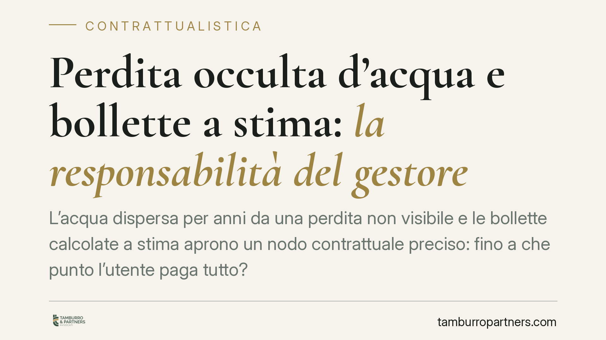

Perdita occulta d'acqua e bollette a stima: la responsabilità del gestore
L'acqua dispersa per anni da una perdita non visibile e le bollette calcolate a stima aprono un nodo contrattuale preciso: fino a che punto l'utente paga tutto? La questione tocca gli obblighi accessori del gestore, tra cui la lettura periodica del contatore, e il concorso del creditore nell'aggravamento del danno. Vediamo come si inquadra sul piano civilistico.

Il caso: perdita occulta e consumi fatturati a stima
Lo scenario è frequente. Una perdita occulta — cioè una dispersione non visibile, spesso su tubazioni interrate o sotto pavimento — provoca per mesi o anni un consumo d'acqua elevatissimo. Nel frattempo il gestore non effettua letture reali del contatore e fattura "a stima", basandosi su medie storiche. Quando la perdita emerge, l'utente si trova davanti a un conguaglio imponente.
La domanda giuridica è: tutto il maggior consumo grava sull'utente, o il gestore risponde in parte per non aver rilevato per tempo l'anomalia attraverso la lettura periodica?
Inquadramento normativo
Il rapporto tra gestore e utente è un contratto di somministrazione (art. 1560 c.c.): una parte si obbliga a erogare prestazioni periodiche o continuative — qui l'acqua — verso un corrispettivo. L'obbligazione principale dell'utente è il pagamento dei consumi effettivamente erogati.
Accanto all'obbligazione principale esistono obblighi accessori a carico del gestore. Tra questi, la lettura periodica del contatore. Non è un obbligo meramente formale: la rilevazione dei consumi reali consente di intercettare anomalie e di contenere il danno. La sua omissione, pur non liberando l'utente dall'onere di custodire il proprio impianto, può incidere sulla ripartizione delle conseguenze.
Il perno è l'art. 1227 c.c. (concorso del fatto del creditore). Il primo comma riduce il risarcimento se il fatto colposo del danneggiato ha concorso a causare il danno; il secondo esclude il risarcimento per i danni che il creditore avrebbe potuto evitare usando l'ordinaria diligenza. Applicato qui: se il gestore, omettendo le letture dovute, ha contribuito a far crescere il consumo disperso senza allertare l'utente, quella condotta concorre all'aggravamento del danno. La quantificazione resta affidata al giudice di merito, caso per caso.
Sul piano probatorio va distinta la fatturazione a lettura reale da quella a stima. La prima documenta consumi effettivi; la seconda è una proiezione che non prova il consumo reale e può essere contestata quando le circostanze — una perdita occulta — rendono la media storica inattendibile.
Nota sui termini di prescrizione
Per le utenze di acqua, gas ed energia elettrica la L. 205/2017 (Legge di Bilancio 2018) ha introdotto un termine di prescrizione biennale per i crediti relativi ai consumi. Dato il rilievo pratico del punto, la collocazione esatta all'interno dell'articolo e la decorrenza vanno sempre verificate rispetto alla singola fornitura e al periodo contestato: non tutti i conguagli vi rientrano automaticamente.
Implicazioni pratiche per l'utente
Per l'utente — domestico o commerciale — tre conseguenze.
Prima: un conguaglio su consumi anomali non è necessariamente dovuto per intero. L'eventuale omessa lettura del gestore è un elemento da far valere nella ripartizione del danno.
Seconda: la fatturazione a stima non è una prova del consumo. Se il dato reale è controverso, l'onere di dimostrare l'effettivo prelievo si sposta sul piano probatorio e la stima può essere messa in discussione.
Terza: resta a carico dell'utente la diligenza nella manutenzione dell'impianto privato. Il concorso del gestore riduce, non azzera, la responsabilità di chi non ha vigilato sul proprio impianto.
Cosa fare in concreto
- Raccogli lo storico delle letture: verifica dalle fatture quando sono state effettuate letture reali e quando si è fatturato a stima, individuando il periodo "scoperto".
- Documenta la perdita: conserva l'intervento tecnico che l'ha accertata e riparata, con data, natura del guasto e indicazione del carattere occulto.
- Richiedi al gestore i dati di rilevazione: chiedi per iscritto la cronologia delle letture e le ragioni dell'eventuale mancata rilevazione periodica.
- Contesta formalmente il conguaglio entro i termini indicati dal contratto e dalla carta dei servizi, distinguendo tra importo relativo al consumo reale e importo basato su stima.
- Verifica la prescrizione dei crediti più risalenti alla luce della normativa sulle utenze.
La valutazione dipende dall'analisi del singolo rapporto contrattuale: incidono il testo del contratto, la carta dei servizi applicabile, la tempistica delle letture e la prova della perdita.
---
*Contributo informativo a cura di Tamburro & Partners - Avv. Giuseppe Tamburro. Non costituisce parere legale.*
Ogni contratto ha il suo equilibrio.
Se vuoi una revisione delle clausole o una redazione su misura, scrivi allo studio. Ti rispondiamo entro un giorno lavorativo.